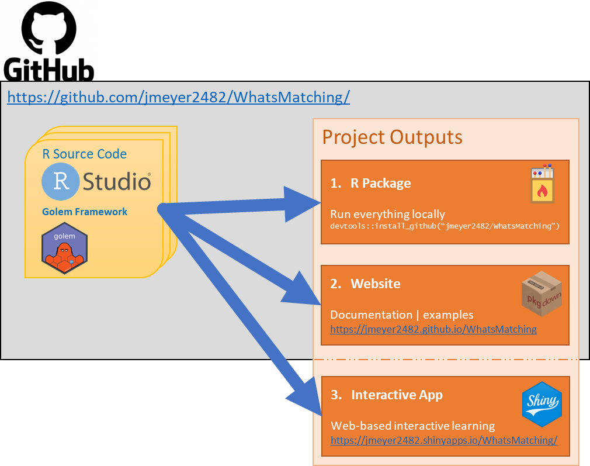

Project Development
This project has been developed as a Shiny app using the Golem framework3 to support it’s production. There are a number of key functions that have been implemented to generate the data and matching processes. Let’s have a look in a bit more detail.
The golem framework
The Golem framework is the brain child of Colin Fay. In essence, Shiny apps are ideal for development as a R package. That is to say that, the package structure is well suited to the development of production grade Shiny2 apps.
The golem package itself provides functions and helpers
to generate and create the framework that can be used for the
development of the Shiny app and package. In addition, there are
theoretical
underpinnings and best practice advice provided to give the best
chance of developing a high quality application.
Key functions and functionality
There are
four
key functions that have been developed as part of the package in
order to make data generation and analysis as straightforward as
possible. They are create.sim.data,
matched.data, matching.plot, and
combined.plot. The functions have been designed to follow
and iterative process. These functions draw upon existing functionality
from other packages including ggplot29, plotly7, dplyr10, and others1,5,6,8.Full details can be found in the
Reference section.
create.sim.data()
As the name suggests, this is the data simulation function. There are four simulations available for use within the app. Each one has a specific type of data generation to explore the matching process.
| Simulation 1 | Based on King and Neilsen's most simplistic illustration of finding the hidden experiment in the data. |
| Simulation 2 | Based on King and Neilsen's illustration to show model dependence and bias. |
| Simulation 3 | Data is generated based on using two covariates with a bivariate normal distribution. The user can change the causal relationships between the covariates and/or the treatment and outcome variables but cannot change the strength of the relationships. |
| Simulation 4 | Uses a bivariate normal distribution to generate data where the user can alter the level of confounding between the covariates and the treatment and outcome variables. |
matched.data()
This is the function that conducts the matching. It primarily uses
match_on() function in the optmatch
package4 to generate a \(n \times p\) matrix of matches for the
chosen method, where \(n\) represents
the control units and \(p\) represents
the treated units. The output is then used to generate the actual
matches along with a number of other outputs that allow further
exploration of the data outside of the app if desired. However, it
should be noted that this function is not designed for complex matching
and, for example, may not be suitable for use with categorical data.
matching.plot()
This function takes the output from the matched.data
function and turns it into a plotly plot which demonstrates
the sequence of matches occurring in a cumulative fashion, starting with
the nearest matched pair to the furthest matched pair. Outside the app,
this plot can be generated on its own.
combined.plot()
The combined.plot function takes 2 different matching
methods generated by the matched.data function and returns
4 subplots that highlight the differences between the matching methods.
Plots 1 and 2 contain visualisations of the way the data has been
matched (via the matcing.plot function), Plot 3 shows the
standardised mean differences between the specified covariates and
methods (specified in the function, not the formula), and Plot 4 shows
the differences in the calculated estimate of the treatment effect for
both methods. Plots 3 and 4 show the results for each set of matched
data as shown in Plots 1 and 2 as a progression through the matching
process with fixed values of the unadjusted data. Plot 4 also includes
stratified and weighted propensity score estimates for comparison.
Deployment
The development process for this app has meant that it has been most
practical to manage on GitHub. All the associated files and
documentation are hosted on
a
public GitHub repository. In terms of the process undertaken, the
WhatsMatching package is the vehicle for the Shiny App as
suggested in Golem framework. From there, pkgdown11 has been used to create the
package based website you are now viewing, which is deployed from
GitHub.
The end result result of this developmental process means that there
is a Shiny App and Package Website that can be used in an educational
format. The GitHub hosting means that the package can be installed by
running
devtools::install_github("jmeyer2482/Whatsmatching") in an
R environment making the functions available to more
advanced users. Figure 1 shows the development pathways and output that
have been generated from the process.
|  |